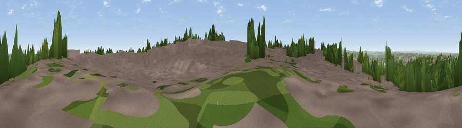

Viewpoint near Gateshead
#12549 in England · top 21% of its area beats it · near GatesheadWhere it is
The exact computed spot (NZ 26775 60625). Click the marker for map links.
The view, rendered

A 360° render of this exact spot computed from the terrain model, tree cover and land cover — summer colours, afternoon light, calibrated against photographs of famous viewpoints. Real trees, hedges and buildings will differ in detail.
The panorama
Grey silhouette: terrain skyline in each direction (720 bearings, Earth curvature and refraction included). Dashed green: skyline with trees (+15 m) and buildings (+8 m) as obstacles. Blue strip: how far the ground is visible on each bearing.
Where the view opens
Wedge length = distance to the farthest visible ground on that bearing (vegetation-aware). Rings at 10, 25 and 50 km.
What fills the view
56% built-up · 23% woodland · 15% grassland · 3% cropland · 2% water
Angular shares of the visible panorama (visual magnitude), not map area. Landscape diversity 0.50 (0–1 Shannon).
Key numbers
More beautiful places nearby
The staircase of upgrades: each row has a higher view potential than everything closer. Driving times are estimates from straight-line distance, calibrated against real road routing — check an actual route before setting out.
| Place | Direction | Drive | Score |
|---|---|---|---|
| Viewpoint near Springwell | S · 1 km | ~3 min | 61.6 |
| White Hill | ESE · 1 km | ~3 min | 69.8 |
| Viewpoint near Sunniside | WSW · 5 km | ~12 min | 77.6 |
| Pontop Pike | WSW · 14 km | ~25 min | 77.8 |
| Viewpoint near Rothbury | NNW · 44 km | ~64 min | 81.1 |
| Dove Crag | NNW · 44 km | ~64 min | 82.3 |
| Viewpoint near Lazenby | SE · 52 km | ~73 min | 86.4 |
| Warsett Hill | SE · 58 km | ~80 min | 86.8 |
54.93958, -1.58360 · source: screening · position refined by local search. Computed location — check access rights before visiting.